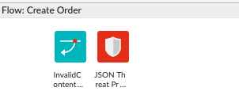

One of the most important aspects of developing proxies in Apigee is how to properly catch and handle errors at runtime. We'll see how to catch a fault as well as how to generate a fault that we can control.
What you'll learn
- Configure conditional FaultRules in a proxy
- Use the RaiseFault policy to generate an error response
What you'll need
- Your proxy created in the previous lab
Use case
You want rewrite an error response that's generated by Apigee to use your own format and information.
Download a working solution to the previous lab as a proxy bundle ZIP file:
Prerequisites:
- Target Server: TS-Retail (instructions in lab 2)
- Product, Developer and App (instructions in lab 3)
- Key Value Map: ProductsKVM (instructions in lab 6)
- Shared Flow: BackendCredentials (instructions in lab 9)
Find your spec ID. When you open your spec in the spec editor, the link will be in this format, with the spec ID at the end of the URL:
https://apigee.com/organizations/YOURORG/specs/folder/FOLDERID/editor/YOURSPECID
Navigate to your proxy and upload the bundle as a new revision:

Select the association.json resource. Replace YOURORG and YOURSPECID with the values from the spec URL.

Once updated, the association.json should look something like this:
{
"url": "/organizations/apigeek-eval/specs/doc/207966/content"
}
Click Save to save your proxy. Open the Deployment menu, and check the deployment status. Click on test to deploy this revision of the proxy.

Test will be green when it is deployed.

- Catch and rewrite the error generated by the JSON Threat Protection policy
- Create a new ‘catch-all' flow to handle requests to invalid resources
Back in the proxy, click on default Proxy Endpoint
You should see the XML configuration for it. Look for the empty FaultRules block
Faults are like try/catch blocks in Java. The FaultRules section is where we'll create our ‘catch' block. Based on the error generated by the JSON Threat Protection policy, we'll use a system variable called fault.name.
Replace the empty code block with
<FaultRules>
<FaultRule name="JSONThreat">
<Condition>jsonattack.JTP-Protect.failed == true</Condition>
</FaultRule>
</FaultRules>Make sure the JSON Threat Protection policy name (JTP-Protect) matches in the condition. More details on the errors generated by the JSON Threat Protection can be found here. For all errors on all policies use this reference.
Let's now add a policy, without attaching it to any flows. Click on the ‘+' sign in the Policies panel.
Select an AssignMessage policy and name it:
AM-400JSONThreat
Then overwrite its code to be the following:
<AssignMessage async="false" continueOnError="false" enabled="true" name="AM-400JSONThreat">
<Set>
<Payload contentType="application/json">{
"error":"Invalid JSON payload: {error.message}"
}</Payload>
<StatusCode>400</StatusCode>
<ReasonPhrase>Bad Request</ReasonPhrase>
</Set>
<IgnoreUnresolvedVariables>true</IgnoreUnresolvedVariables>
<AssignTo createNew="false" transport="http" type="response"/>
</AssignMessage>This will set our response to the format we intend. We use the error code 400 instead of the 500 generated by default by the policy, because 400 indicates a bad request (which this is), and 500 would indicate a server error.
Now let's attach this policy to our fault rule.
Simply add the following, inside the <FaultRule> block.
<Step>
<Condition>fault.name Matches "ExecutionFailed"</Condition>
<Name>AM-400JSONThreat</Name>
</Step>The final code will be
<FaultRules>
<FaultRule name="JSONThreat">
<Condition>jsonattack.JTP-Protect.failed == true</Condition>
<Step>
<Condition>fault.name Matches "ExecutionFailed"</Condition>
<Name>AM-400JSONThreat</Name>
</Step>
</FaultRule>
</FaultRules>Save and deploy your proxy and test it with a request that causes a JSON Threat to be detected:
URL:
POST /ordersHeaders:
apikey: {key of application}
Content-Type: application/jsonBody:
{
"orderNumber": 342345,
"lineItems": [
{ "productId": "ME089LLA", "quantity": 1 },
{ "productId": "MD388LLA", "quantity": 2 },
{ "productId": "ME761LLB", "quantity": 3 },
{ "productId": "MD878LLA", "quantity": 4 }
],
"promisedDeliveryDate": "30 Jul 2018",
"deliveryNotes": "If not home, please place inside backyard gate",
"destination": {
"addressType": "home",
"address": {
"streetAddr1": "1 Main St."
}
}
}Verify that the error is now returned with a 400 status code instead of 500.
You may have noticed that if you do not pass a Content-Type header set to application/json, the JSONThreatProtection policy will not execute and the data will pass to the backend, even if malformed.
To prevent scenarios like this, it is important to validate all incoming data.
Create a new policy in the ‘createOrder' flow:
Select a RaiseFault policy. Change the name to:
RF-InvalidContentType
Its content will be:
<RaiseFault async="false" continueOnError="false" enabled="true" name="RF-InvalidContentType">
<FaultResponse>
<Set>
<Headers/>
<Payload contentType="application/json">{
"error":"content-type header must be application/json"
}</Payload>
<StatusCode>400</StatusCode>
<ReasonPhrase>Bad Request</ReasonPhrase>
</Set>
</FaultResponse>
<IgnoreUnresolvedVariables>true</IgnoreUnresolvedVariables>
</RaiseFault>Drag the new policy before the JSON Threat Protection policy.

We now need to add a condition to make sure we only generate an error in case the Content-Type header does not contain the info we are expecting.
Click on the flow, and find where the policy is being referenced. Add the condition line below and make sure the final result looks like:
<Step>
<Condition>request.header.Content-Type != "application/json"</Condition>
<Name>RF-InvalidContentType</Name>
</Step>Save the proxy. Test the proxy once again, but this time omitting the header or sending a different value for the content-type. You should then receive a 400 Bad Request as we have configured in the RaiseFault policy.
Another aspect of error handling is being able to white-list the operations allowed. For every combination of path/verb that you want to support, you should configure them in your proxy.
To catch the invalid requests, to anything not whitelisted, we'll add a new flow with no conditions and in it, raise a fault with a 404 response.
First, let's create a new Raise Fault policy (unattached) with the name:
RF-404NotFound
The configuration should be:
<RaiseFault async="false" continueOnError="false" enabled="true" name="RF-404NotFound">
<FaultResponse>
<Set>
<Headers/>
<Payload contentType="application/json">{
"error":"Invalid request: {request.verb} {proxy.basepath}{proxy.pathsuffix}"
}</Payload>
<StatusCode>404</StatusCode>
<ReasonPhrase>Not Found</ReasonPhrase>
</Set>
</FaultResponse>
<IgnoreUnresolvedVariables>true</IgnoreUnresolvedVariables>
</RaiseFault>We now need to reference this policy in our catch-all flow.
Add the new unconditional flow to the Proxy Endpoint as the last entry in the <Flows> tag and reference the new policy:
<Flow name="404NotFound">
<Request>
<Step>
<Name>RF-404NotFound</Name>
</Step>
</Request>
<Response/>
</Flow>
</Flows>To test, invoke anything that does not exist in the proxy. Example:
URL:
GET /retail/v1/foobarYou should receive a 404.
You now know how to handle errors and generate errors.